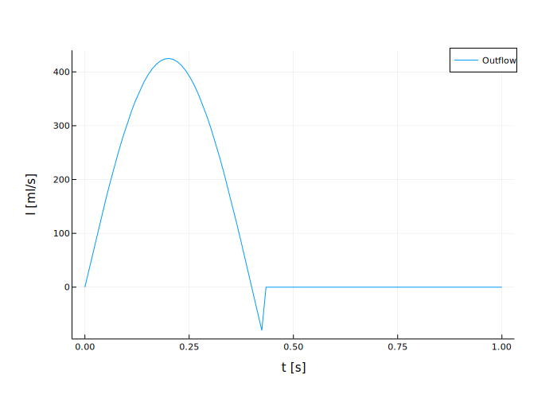
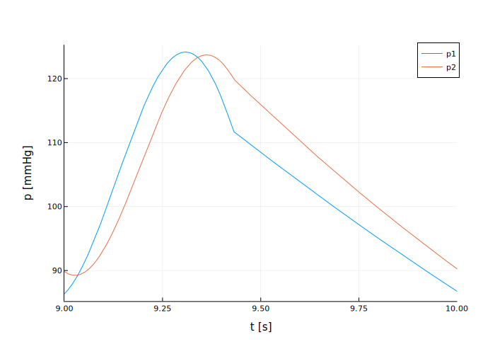

using DifferentialEquations, ForwardDiff, Plots6 Solving ODEs and ODE systems
Solving Ordinary Differential Equations is one of the most common use cases for scientific computing in engineering applications.
The Julia package DifferentialEquations.jl is one of the biggest selling points of the language. It offers an unparalled range of solvers, all using the same interface1.
6.1 Example: 4-Element Windkessel Model
The windkessel model is a common model for the pressure response of the vascular system (blood circulation) to a periodic, pulsing flow waveform (Westerhof et al. 2019).
Here we are going to work with the 4-Element windkessel model (Stergiopulos, Westerhof, and Westerhof 1999), comprising a flow source (time dependent flow rate), two resistors for characteristic Resistance of the near vessel (aorta), \(R_{c}\), and systemic (peripheral) resistance, \(R_{p}\), a compliance (capacitance) \(C\), representing the blood storage capacity of the peripheral vessels, and an inductance \(L_p\), representing the inertia in the proximal, large vessel, e.g., the aorta.
The pressures in this circuit - \(p_{1}\) before, and \(p_{2}\) after the proximal L-R element - are described by the system of ODEs:
\[ \frac{d p_{1}}{d t} = - \frac{R_{c}}{L_{p}} p_{1} + \left( \frac{R_{c}}{L_{p}} - \frac{1}{R_{p} C} \right) p_{2} \\ + R_{c} \frac{d I(t)}{d t} + \frac{I(t)}{C} \tag{6.1}\]
\[ \frac{d p_{2}}{d t} = - \frac{1}{R_{p} C} p_{2} + \frac{I(t)}{C} \tag{6.2}\]
In order to implement this model, we need to load the required modules. We use DifferentialEquations, Plots, and ForwardDiff for the time-derivative \(\frac{\partial I}{\partial t}\):
The input waveform is a generic half-period of a sine-wave with a systolic (ejection) time of \(t_{syst} = 0.4 T\), with \(T=1\ \mathrm{s}\) period-time (60 beats per minute). The dicrotic notch is modelled by running the sine into the negative for \(t_{dicr} = 0.03\ \mathrm{s}\):
\[\begin{equation} I = \begin{cases} I_{min} + (I_{max} - I_{min}) \sin \left(\frac{\pi}{t_{syst}} t \right) & \text{if } t \lt (t_{syst} + t_{dicr})\\ I_{min} & \text{else} \end{cases} \end{equation}\]
In Julia, this function is implemented as2:
# max and min volume flow in ml/s
const max_i = 425
const min_i = 0.0
# period time
const T = 1.0
# Syst. Time in s
const systTime = 2 / 5 * T
# Dicrotic notch time in s
const dicrTime = 0.03
function I(t)
# implicit conditional using boolean multiplicator
# sine waveform
t = t - T * (t ÷ T)
return ((max_i - min_i) * sin(pi / systTime * (t))
* (t < (systTime + dicrTime) )
+ min_i)
endWe can quickly plot this function in Figure 6.2.
plotTime = LinRange(0,1,100)
plot(plotTime, I.(plotTime),
xlabel = "t [s]", ylabel = "I [ml/s]", label = "Outflow") 
The definition of the ODEs Equation 6.1 and Equation 6.2 is done as a function with parameters dP and P, for \(\frac{d p_{1,2}}{d t}\), and \(p_{1,2}\), respectively3
function wk4(dP, P, params, t)
Rc, Rp, C, Lp = params
dP[1] = (
-Rc / Lp * P[1]
+ (Rc / Lp - 1 / Rp / C) * P[2]
+ Rc * ForwardDiff.derivative(I, t)
+ I(t) / C
)
dP[2] = -1 / Rp / C * P[2] + I(t) / C
return dP[1], dP[2]
endWe define the parameters, initial conditions, and time span for the integration:
Rc = 0.03
Rp = 1.0
C = 2.0
Lp = 0.02
tspan = (0, 10)
params = [Rc, Rp, C, Lp]
P0 = zeros(2)2-element Vector{Float64}:
0.0
0.0And define the ODE problem and solve it4. We will time the run using the @time macro:
prob = ODEProblem(wk4, P0, tspan, params)
@time sol = solve(prob, DP5(), reltol=1e-9); 0.177039 seconds (249.28 k allocations: 16.316 MiB, 99.59% compilation time: 100% of which was recompilation)Looking at this run time, we see that the run is slower than the Matlab run5. Looking at the details of the benchmark times, we see that most of that time has been used on compilation. So when we re-run the solver, it should take less time:
@time sol = solve(prob, DP5(), reltol=1e-9); 0.000729 seconds (2.95 k allocations: 252.766 KiB)And indeed, the run time is now one order of magnitude faster than the Matlab times shown in Section 6.1.1.
We can plot the solution in Figure 6.3 using the special plot recipe for ODE solutions:
plot(sol,
label = ["p1" "p2"],
xlabel = "t [s]",
ylabel = "p [mmHg]",
tspan=(9,10))
6.1.1 Comparison to Python and Matlab
For those coming from Python or Matlab, let’s have a look at how this problem can be solved in these two languages and compare to the Julia version.
Switch between the languages using the tabs below:
import scipy as sp
from scipy import integrate
from scipy.misc import derivative
import numpy as np
import time
def wk4(t, y, I, Rc, Rp, C, Lp, dt):
dp1dt = (
-Rc / Lp * y[0]
+ (Rc / Lp - 1 / Rp / C) * y[1]
+ Rc * derivative(I, t, dx=dt)
+ I(t) / C
)
dp2dt = -1 / Rp / C * y[1] + I(t) / C
return [dp1dt, dp2dt]
time_start = 0
time_end = 10
Rc = 0.2
Rp = 1.0
C = 1.0
Lp = 1e-2
dt = 1e-6
y0 = np.zeros(2)
# Generic Input Waveform
# max volume flow in ml/s
max_i = 425
# min volume flow in m^3/s
min_i = 0.0
# Period time in s
T = 0.9
# Syst. Time in s
systTime = 2 / 5 * T
# Dicrotic notch time
dicrTime = 0.03
def I(t):
# implicit conditional using boolean multiplicator
# sine waveform
I = (
(max_i - min_i) * np.sin(np.pi / systTime * (t % T))
*(t % T < (systTime + dicrTime)) + min_i
)
return I
tic = time.perf_counter()
sol = sp.integrate.solve_ivp(
lambda t, y: wk4(t, y, I, Rc, Rp, C, Lp, dt),
(time_start, time_end),
y0,
method="RK45",
rtol=1e-9,
vectorized=True,)
toc = time.perf_counter()
print(f"Time elapsed: {toc - tic:0.4f} seconds")Runtime for this code is (timed using %%time in Jupyter):
Time elapsed: 0.7872 secondsfunction dP = RHS_defn(t,P,Rc,Rp,C,Lp)
dP = zeros(2,1);
dP(1) = -Rc / Lp * P(1) ...
+ (Rc / Lp - 1 / Rp / C) * P(2) ...
+ Rc * didt(t) + i(t) / C;
dP(2) = -1 / Rp / C * P(2) + i(t) / C;
end
function didt = didt(i, t)
dt = 1e-3;
didt = (i(t+dt) - i(t-dt)) / (2 * dt);
end
function i = i(t)
max_i = 425;
min_i = 0.0;
T = 0.9;
systTime = 2 / 5 * T;
dicrTime = 0.03;
i = ((max_i - min_i) * sin(pi / systTime * (mod(t,T))) ...
*(mod(t,T) < (systTime + dicrTime)) ...
+ min_i);
end
Rc = 0.03
Rp = 1.0
C = 2.0
Lp = 0.02
options = odeset('Reltol',1e-9);
tic
[t, P] = ode45(@(t,P) RHS_defn(t,P,Rc,Rp,C,Ls,Lp), tspan, P0, options);
tocRuntime for this code is (timed using tic toc in Matlab)6, which is a bit more than an order of magnitude slower than Julia:
Elapsed time is 0.018172 seconds.So in this case, Julia is one order of magitude faster than Matlab and around 500x faster than Python7 solving ODEs.
Personally, I find the Matlab code and, in particular, the Julia code easier to read.
So changing the solver does not require any changes in the definition of the problem, even when moving between ODEs, DAEs and SDAEs.↩︎
Note that we use
consthere to define the parameters. Julia does suffer in performance, when global variables are used, since these break type stability in the multiple dispatch. Making these parameter constant fixes their type. We should really be using these parameters in the function definition, or use a lambda function here.↩︎Pis a vector of values, actually, as isdP.↩︎We use the Dormand-Prince solver
DP5here, because that is the same algorithm that Matlab’sode45uses. DifferentialEquations.jl has a multitude of other solvers that may perform better. Play around with these.↩︎See below. What happened here? Doesn’t everybody say how much faster Julia is than Matlab?↩︎
Same code in Octave, the free open-source version of Matlab runs in 3 seconds. Current versions of Matlab have improved runtime by partial just-in-time compilation. Note that the first run in Matlab is also slightly longer with 0.035 seconds, which is most likely due to Matlab optimising the solver to the problem.↩︎
I have tried using PyPy and Cython in other cases and found that they speed up Python considerably. Unfortunately this was not the case when using SciPy and Numpy, which made the compiled Python version one order of magnitude slower than interpreted. There seems to be a problem with C-calls from PyPy.↩︎